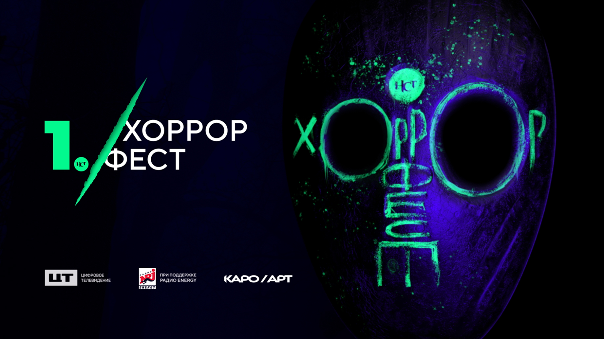
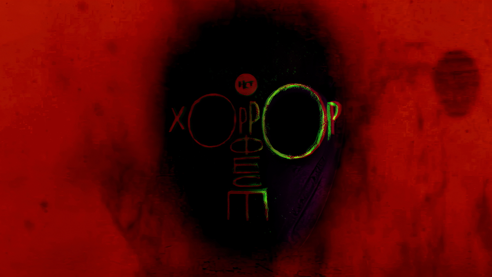
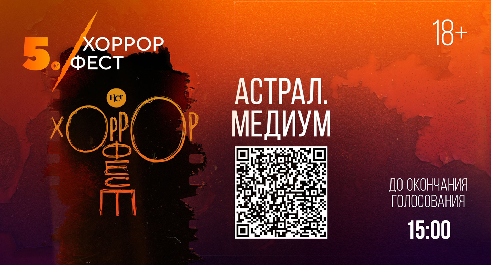
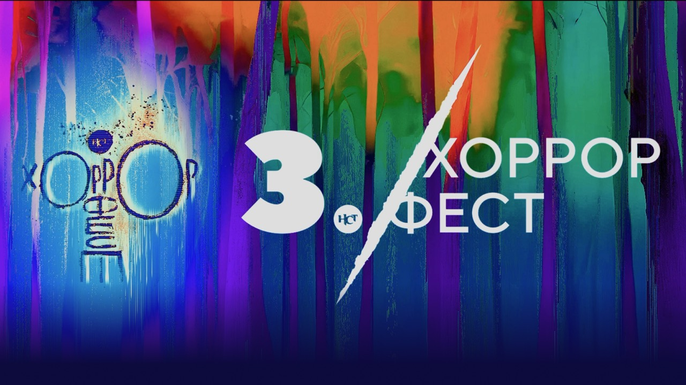
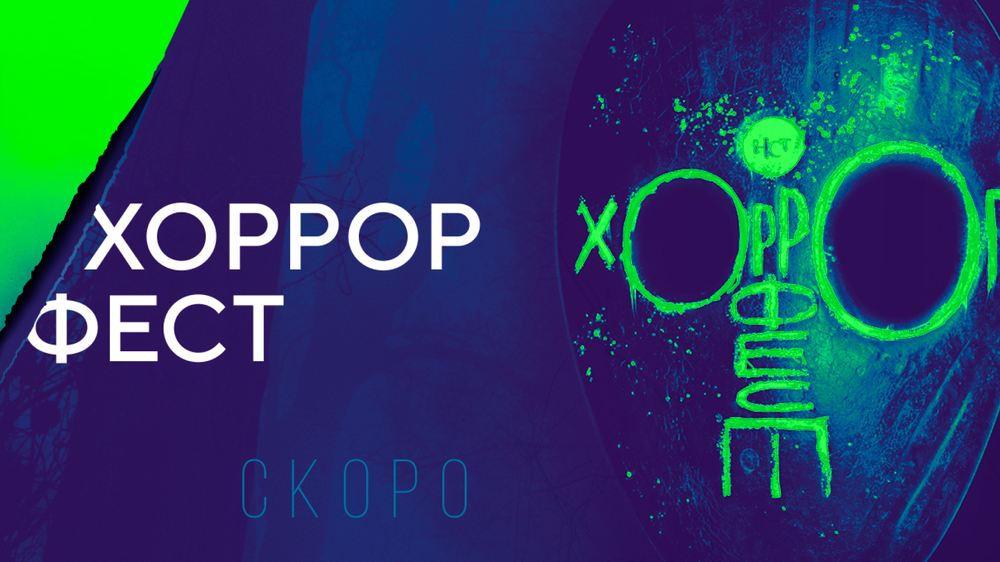

Цифровое телевидение, телеканал НСТ · с 2021
«Хоррор Фест»: разработка айдентики фестиваля страха
Разработали логотип, эфирную графику и промо «Хоррор Феста», фестиваля фильмов ужасов телеканала НСТ.

Для «Хоррор Феста» телеканала НСТ мы разработали айдентику фестиваля и графику для эфира и промо. В программе фестиваля фильмы ужасов и триллеры. Их интонацию передали через почти монохромный кадр с красным акцентом.
Лица в тени, пустые коридоры и лес развивают ощущение тревоги. Леттеринг, 3D и моушн-дизайн связали эти образы в единое оформление.



